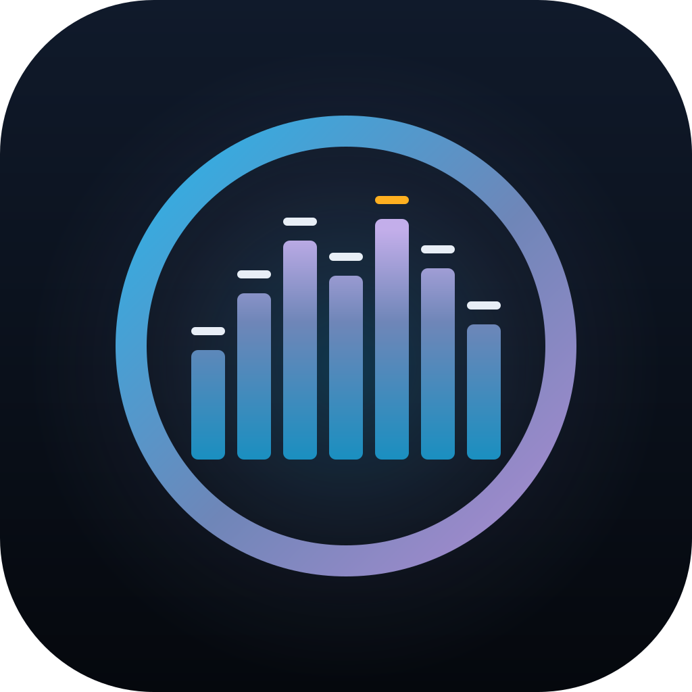

Equal energy per octave (−3 dB/octave). Reads flat on a fractional-octave RTA, which makes it the reference signal for tuning a system.
Equal energy per hertz, so it rises +3 dB/octave on an RTA. Useful for high-frequency driver checks. Keep the level low: most of its energy is in the treble.
Start low. Test signals at high level can damage loudspeakers and hearing.
Pocket RTA Pro
Input
Calibration
Fit the calibrator to the mic, switch it on, then tap Calibrate. Pocket RTA measures the Z-weighted level for 3 seconds and sets the offset so the reading matches the reference. The default offset assumes a typical phone mic (94 dB SPL ≈ −26 dBFS). Phone and browser inputs are not Class 1 or Class 2 instruments.
Console graphic EQ
Used by the GEQ view on the RTA screen. 28-band covers 31.5 Hz to 16 kHz (for example the Soundcraft Si Expression). 31-band covers 20 Hz to 20 kHz (for example the X32 and M32). Check your console's EQ screen for its band count and range.
Display
About

